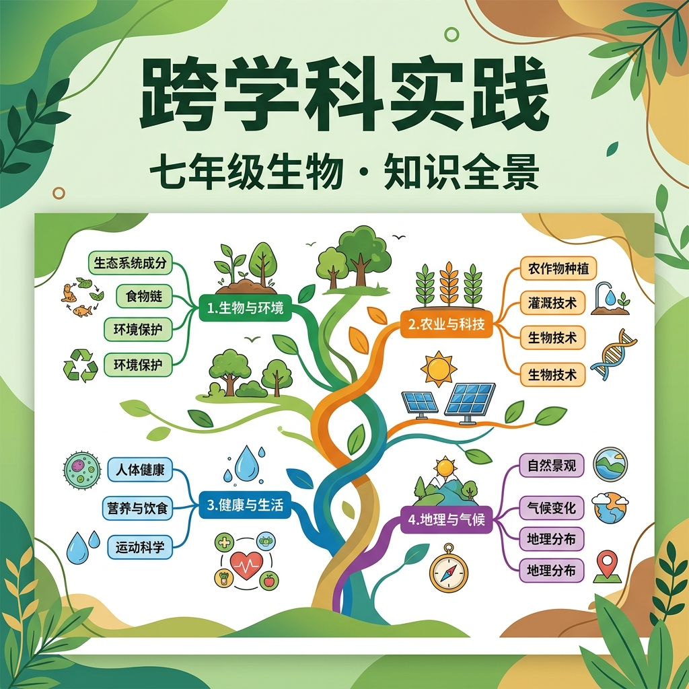

整合初一生物全年知识，连接数理化地各学科

生命的基本单位
生物+化学生长与繁殖的基础
生物+数学科学观察工具
生物+物理最大的生态系统
生物+地理生物与环境的关系
生物+地理能量流动
生物+物理+数学生物与非生物环境
生物+化学被子植物繁殖器官
生物+化学双受精与种子形成
生物+数学藻苔蕨裸被
生物+地理+化学扦插嫁接压条
生物+农业受精与胚胎发育
生物+化学调查校园中的植物种类，统计不同类群数量，绘制分布图，分析与环境因素的关系。
检测水体中氮、磷含量，观察藻类生长情况，分析人类活动对水体生态系统的影响，提出治理方案。
控制光照强度、温度、CO₂浓度等变量，观测植物产氧量，绘制影响曲线，理解生态系统能量转化。
利用数学函数描述细胞分裂的指数增长，预测细胞数量，理解肿瘤细胞无限分裂的危害。
将下列生物现象拖入对应的跨学科领域
1. 研究一片森林生态系统中，蘑菇（真菌）在物质循环中的作用，需要哪些学科知识？（ ）
2. 下面哪个问题是生物学与数学的最佳结合点？（ ）
3. 利用信息技术分析基因序列数据，研究物种亲缘关系，这种研究方法体现了哪种思维？（ ）
4. 以下哪组问题最能体现"生物学+地理学"的跨学科融合？（ ）